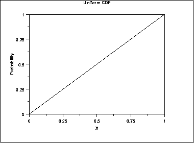
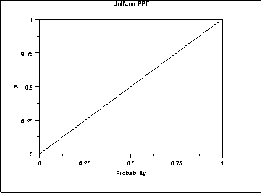
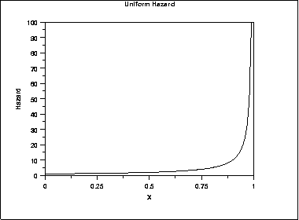
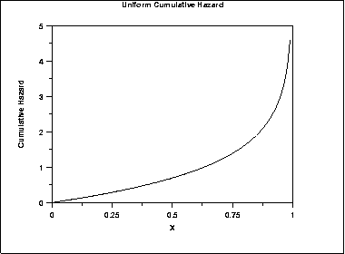
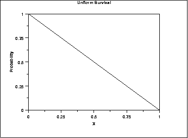
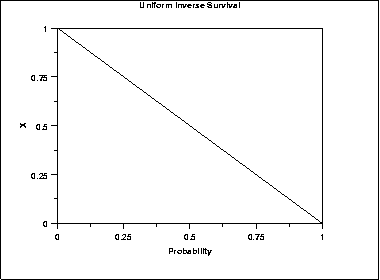

1.3. EDA Techniques
1.3.6. Probability Distributions
1.3.6.6. Gallery of Distributions
1.3.6.6.2. |
Uniform Distribution |
\( f(x) = \frac{1} {B - A} \;\;\;\;\;\;\; \mbox{for} \ A \le x \le B \)
where A is the location parameter and (B - A) is the scale parameter. The case where A = 0 and B = 1 is called the standard uniform distribution. The equation for the standard uniform distribution is
\( f(x) = 1 \;\;\;\;\;\;\; \mbox{for} \ 0 \le x \le 1 \)
Since the general form of probability functions can be expressed in terms of the standard distribution, all subsequent formulas in this section are given for the standard form of the function.
The following is the plot of the uniform probability density function.

\( F(x) = x \;\;\;\;\;\;\; \mbox{for} \ 0 \le x \le 1 \)
The following is the plot of the uniform cumulative distribution function.

\( G(p) = p \;\;\;\;\;\;\; \mbox{for} \ 0 \le p \le 1 \)
The following is the plot of the uniform percent point function.

\( h(x) = \frac{1} {1-x} \;\;\;\;\;\;\; \mbox{for} \ 0 \le x < 1 \)
The following is the plot of the uniform hazard function.

\( H(x) = -ln{(1-x)} \;\;\;\;\;\;\; \mbox{for} \ 0 \le x < 1 \)
The following is the plot of the uniform cumulative hazard function.

\( S(x) = 1 - x \;\;\;\;\;\;\; \mbox{for} \ 0 \le x \le 1 \)
The following is the plot of the uniform survival function.

\( Z(p) = 1 - p \;\;\;\;\;\;\; \mbox{for} \ 0 \le p \le 1 \)
The following is the plot of the uniform inverse survival function.

| Mean | (A + B)/2 |
| Median | (A + B)/2 |
| Range | B - A |
| Standard Deviation | \( \sqrt{\frac{(B - A)^{2}} {12}} \) |
| Coefficient of Variation | \( \frac{(B - A)} {\sqrt{3}(B + A)} \) |
| Skewness | 0 |
| Kurtosis | 9/5 |
-
\( \hat{A} = \bar{x} - \sqrt{3}s \)
\( \hat{B} = \bar{x} + \sqrt{3}s \)
The maximum likelihood estimators are usually given in terms of the parameters a and h where
-
A = a - h
B = a + h
-
\( \hat{a} = \mbox{midrange}(Y_{1}, Y_{2}, ... , Y_{n}) \)
\( \hat{h} = 0.5[\mbox{range}(Y_{1}, Y_{2}, ... , Y_{n})] \)
-
\( \hat{A} = \mbox{midrange}(Y_{1}, Y_{2}, ... , Y_{n}) -
0.5[\mbox{range}(Y_{1}, Y_{2}, ... , Y_{n})] = Y_{1} \)
\( \hat{B} = \mbox{midrange}(Y_{1}, Y_{2}, ... , Y_{n}) + 0.5[\mbox{range}(Y_{1}, Y_{2}, ... , Y_{n})] = Y_{n} \)
One of the most important applications of the uniform distribution is in the generation of random numbers. That is, almost all random number generators generate random numbers on the (0,1) interval. For other distributions, some transformation is applied to the uniform random numbers.